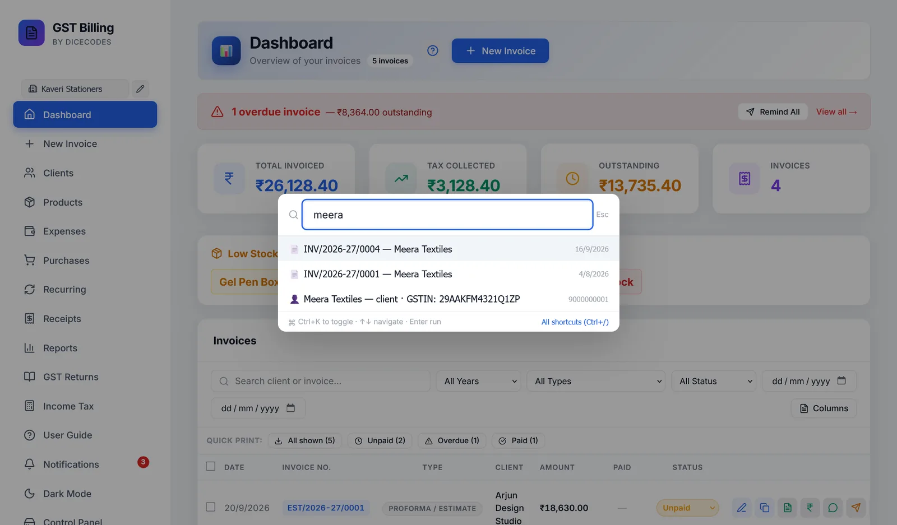
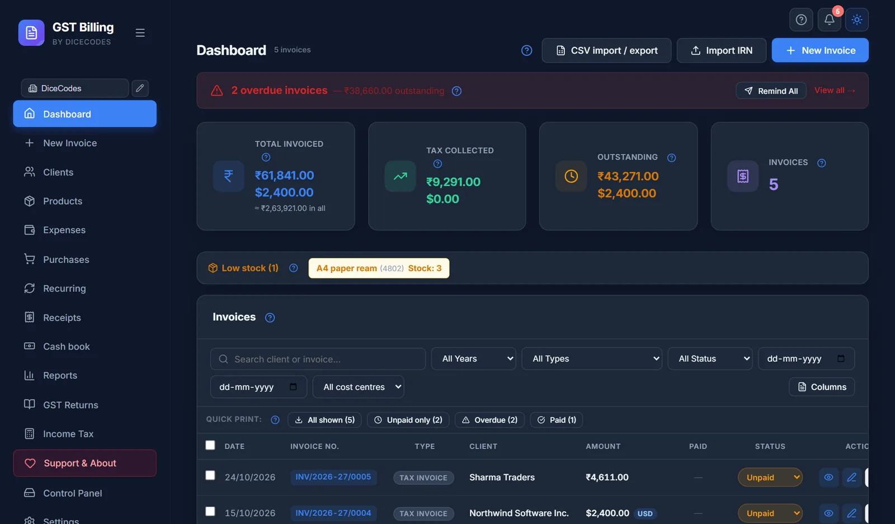

Getting around the app
The sidebar, switching business, notifications, quick search with Ctrl + K, keyboard shortcuts and dark mode.
#Help & Support
How to reach Reazix: Email contact@reazix.com opens your email program, and reazix.com opens our website. The page also explains your updates, has Report a problem and Ask for a feature (both open an email to us), What's new and the Problem log. See Help & Support.
#Switching business
With more than one business saved, click its name at the top of the sidebar and choose another. Every screen changes to that business's invoices, purchases, expenses, receipts, recurring invoices, reports and returns. Manage profiles… opens Settings.
#Notifications
The 🔔 bell at the top right of every screen has a small red count when something needs you. It is your daily to-do list: who has not paid, what is due soon, which return to file, what to re-order. The app works it out by itself when it opens and again every 10 minutes; nothing is sent to you by SMS or email.
Click it to open the Notifications window. Each line is a button: click it and the window closes and takes you to the screen where you deal with it.
| Line | What it means | Clicking it opens |
|---|---|---|
| 🔁 N recurring invoices auto-generated today | The app made invoices from your recurring templates today. Check them and download the PDFs. | Dashboard |
| ⚠ N overdue invoices | Tax invoices, bills of supply and composition bills not fully paid whose Due Date has passed. The first three numbers are shown. Quotations, proformas, challans, credit notes and cancelled invoices never appear. | Dashboard (see Overdue invoices and reminders) |
| ⏰ N invoices due in next 3 days | Unpaid sales whose due date is today or within 3 days, with the client's name. A good time for a polite reminder. | Dashboard |
| 📋 N GST filings due in next 10 days | GSTR-1, GSTR-3B, TDS, TCS, advance tax and ITR dates coming up, with how many days are left ("today" or "4d"). | GST Returns (see the filing guide) |
| 📦 N products low on stock | Products at or below your low-stock limit (5 unless you changed it), with how many are left. Not shown when stock alerts are off in Settings. | Products (see Low stock) |
When nothing needs you, the window says All clear ✨ — nothing needs your attention right now.
Mark all as read clears everything shown and the count goes to zero. The app remembers exactly what you cleared, so a line comes back by itself only when something changes: a new invoice becomes overdue, a different product runs low, or the stock number changes. Clearing does not mark any invoice as paid; record the payment on the Dashboard for that.
An invoice I was paid for still shows as overdue. The payment is not recorded yet. Record it with the ₹ button on the Dashboard and the line goes away at the next check.
No due-date reminders at all. Only invoices with a Due Date can become overdue or due soon. Set one in Invoice Details, or give the client payment terms.
The filing dates do not match my returns. The dates are the usual monthly due dates. If you file quarterly (QRMP) or the government extends a date, go by the GST portal.
#Quick search: Ctrl + K
Press Ctrl + K anywhere, even while typing, and start typing. You can:
- go to any screen, or start a new invoice;
- open an invoice by its number or client;
- find a client by name or GSTIN, or a product by name or HSN, which opens their list;
- jump to Settings, switch dark mode, or see what is new in an update.
- Open itPress Ctrl + K (Mac: ⌘ + K). A box opens with Type a command or page name…
- Type a few lettersFor example
gst, an invoice number such as0012, or part of a client's name. The list narrows as you type. - Pick oneMove with ↑ ↓ and press Enter, or click it. The box closes and the screen opens.
Esc, or a click outside the box, closes it. If nothing fits you see Nothing matches "…": try fewer letters. All shortcuts (Ctrl+/) at the bottom opens the list of keyboard shortcuts.

#Keyboard shortcuts
| Ctrl + K | Quick search |
| Ctrl + N | New invoice |
| Ctrl + S | Save the invoice (on the invoice screen) |
| Ctrl + P | Download the PDF (on the invoice screen) |
| Ctrl + Shift + L | Lock the app (when a PIN is set) |
| Ctrl + / | Show or hide the Keyboard Shortcuts window, which lists these |
| Esc | Close a dialog |
| Enter | Confirm a dialog |
On the invoice screen there are more: see Keyboard shortcuts on this screen. On a Mac, use ⌘ instead of Ctrl.
#Dark mode
The moon button at the top right of every screen switches the app to dark colours, and the sun button switches back. Invoices and PDFs always print in their normal colours.

#Opening it like a desktop app
It already is one. The Reazix Billing icon (the blue R) on your Desktop and in the Start menu starts the app and opens it in its own window, with no tabs or address bar.
Don't use the browser's own Install app button (in Chrome or Edge's address bar). That makes a second icon which opens a window but cannot start the app, so after a restart it only shows "Needs a Quick Start". If you have one, right-click it and choose Uninstall.
#"Needs a Quick Start"
If the app's engine is not running, the page says Reazix Billing Software Needs a Quick Start. Your data is safe. Double-click the Reazix Billing icon on your Desktop or in the Start menu: it starts the app, and the page carries on by itself once it is running. An app icon made by Chrome or Edge cannot start the app; use ours, and remove the other one (right-click it, then Uninstall).